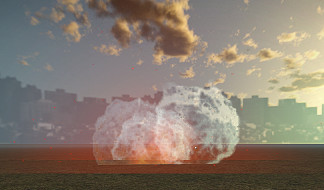
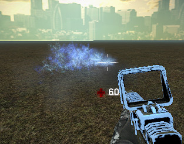

Module: explosion
Documentation last edited: October 22, 2025 at 10:46 UTC
Description
Узел Explosion, создающий различные типы взрывов: обычные, электрические и био-взрывы.


Пример использования
var loc_base = LocationBaseScene.get_scene()
var explosion = Explosion.new()
explosion.global_transform.origin = blast_position
explosion.radius = 8.0
explosion.damage = 75.0
explosion.character_owner = player
loc_base.add_child(explosion)
explosion.explode("generic")
Техническая сторона
├── explosion_areas.gd
# Система пулинга для повторного использования узлов Area,
# применяемых для обнаружения объектов, повреждённых взрывами
├── explosion.gd
# Узел Explosion, используемый вне этого модуля для создания
# взрывов
├── explosion_particle_preloader.gd
# Система пулинга частиц для их повторного использования;
# существует в основном из-за проблемы компиляции шейдеров,
# которую можно решить только созданием ограниченного набора
# этих частиц для их одновременного отображения на экране
└── explosion_props.gd
# Список всех пропсов/узлов, которые потенциально могут быть
# затронуты взрывом. Этот список использовался более ранней
# реализацией системы и сейчас не используется.
# Я даже не знаю, зачем храню его здесь, но пусть будет так.
Создание собственной области нанесения урона
func damage_area_body_enter(body):
# Логика нанесения урона здесь
# ...
func create_damage_area():
# Создаём область урона
var area: = ExplosionAreas.create_area(global_position, 10.0) as Area
area.connect("body_entered", self, "damage_area_body_enter")
# Ждём несколько кадров для фиксации столкновений
for frame in range(10):
yield(VisualServer, "frame_post_draw")
# Очищаем область
area.disconnect("body_entered", self, "damage_area_body_enter")
ExplosionAreas.remove_area(area)
Создание собственных частиц
ExplosionParticlePreloader.play_particle(
"generic",
global_position,
scale.x
)
General Information
Root directories list
assets, docs, src
Nodes
ExplosionParticlePreloader
ExplosionAreas
ExplosionProps
Explosion
Classes
None
Resources
None
Other Scripts
None